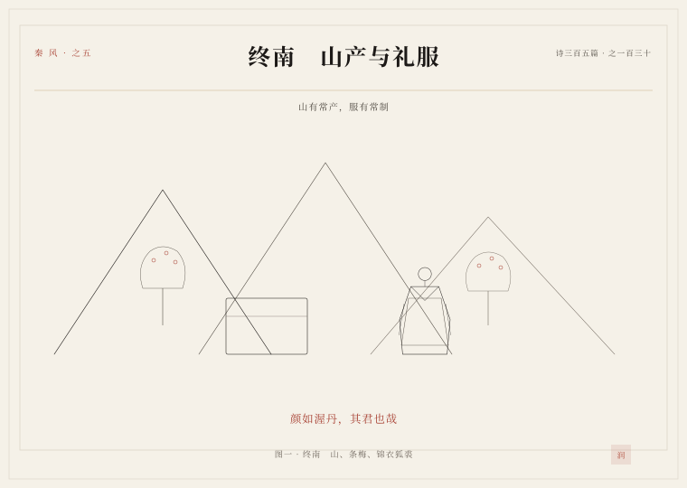
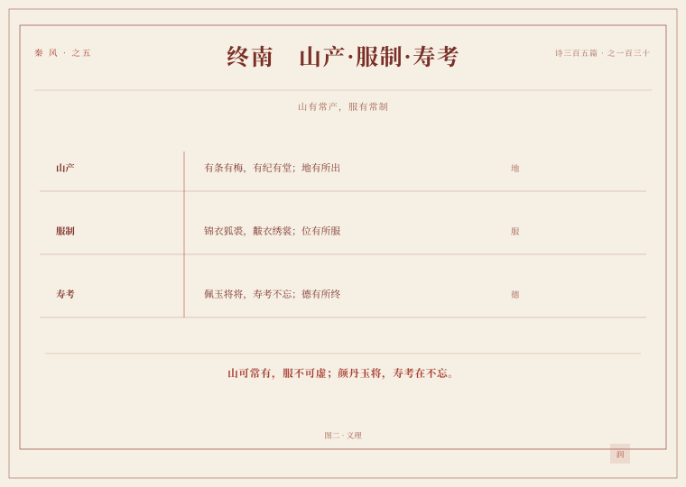

第一百三十篇 终南
秦风 · 之五 SJ130
朗读 · 普通话
依经文原文朗读，章次不读出；配古琴底乐，不改速、不加拖腔。全库同一音色（豆包 TTS），非播音员录制。
一 解题
诗三判：
- 谁在说：秦大夫从君至终南，见其受显服、有威仪，美之而兼戒之。先问山所有，次写君子之服，末以「其君也哉」「寿考不忘」作收。
- 说什么事：二章只换山之所产与服之纹彩。山有常产，服有常制；美其服，正所以责其德。
- 为何编在此：承《蒹葭》求礼不得，此篇礼服初备；秦得周地，始受显服，美中带戒，故次于此。
《毛序》：“《终南》，戒襄公也。能取周地，始为诸侯，受显服，大夫美之，故作是诗以戒劝之。”
朱子《诗集传》：“兴也。终南，山名，在今京兆府南。条，山楸也，皮叶白，色亦白，材理好，宜为车版。君子，指其君也。至止，至终南之下也。锦衣狐裘，诸侯之服也。《玉藻》曰：君衣狐白裘，锦衣以裼之。渥，渍也。其君也哉，言容貌衣服称其为君也。此秦人美其君之词，亦车邻、驷驖之意也。○纪，山之廉角也。堂，山之宽平处也。黻之状，亚两己相戾也。绣，刺绣也。将将，佩玉声也。寿考不忘者，欲其居此位服此服，长久而安宁也。”
本库的看法：《终南》是一首美中带戒的诗。
山有条梅、有纪有堂，是兴：名山宜有茂木，人君宜有盛德显服；衣裳佩玉写其外，渥丹写其色，末句「其君也哉」是赞叹也是掂量——威仪称其位否，还要修德无倦。毛序主戒劝，朱传目为美词；本库从序读，美为戒之饰，不把全诗读成单纯颂美。
断语：山可常有，服不可虚；服称其德，乃得久安。
先辨五事：「终南」是山名，不是终南山之南；「条」是山楸，不是枝条；「梅」是柟楠，不是今之梅花；「纪」是山基／廉角，不是纪律；「黻」是衣上两己相戾之章，不是斧形之黼。
二 经文
第一章
终南何有？有条有梅。
君子至止，锦衣狐裘。
颜如渥丹，其君也哉！
第二章
终南何有？有纪有堂。
君子至止，黻衣绣裳。
佩玉将将，寿考不忘！
分章：二章，章六句。
三 韵读
- 一章：梅、裘、哉，之部。一问一答，声缓而庄。
- 二章：堂、裳、忘，阳部；将将，佩玉之声，旁及阳部。转阳声，收「不忘」二字。
读法：二章先山后服，山产起兴、威仪落德；显服可受，盛德须称，美戒并存于一诗。
四 字义与名物
- 终南：周之名山中南，在今陕西西安南。毛传「终南，周之名山中南也」；朱传「山名，在今京兆府南」；从毛朱，不拆为「终南山之南」。
- 条：槄，山楸。毛传「条，槄」；朱传「山楸也，皮叶白，色亦白，材理好，宜为车版」；从朱传取山楸。
- 梅：柟，楠木。毛传「梅，柟也」；从毛传，不读为今之梅花。
- 纪：毛传「纪，基也」；朱传「山之廉角也」；一作「屺」。两说并存，图中以山基廉角立形，不坐实。
- 堂：毛传「毕道平如堂也」；朱传「山之宽平处也」。从朱传宽平处，兼存毛传道旁如堂之崖。
- 君子：指其君（襄公）。至止：至终南之下；笺谓受命服于天子而来。
- 锦衣狐裘：诸侯之服。毛传「锦衣，采色也；狐裘，朝廷之服」；笺「诸侯狐裘，锦衣以裼之」；从毛笺，狐白裘上加锦衣为裼衣。
- 渥丹：厚渍之丹，赤而有泽。笺「渥，厚渍也；颜色如厚渍之丹，言赤而泽也」；从笺，渥是渍厚，不是涂丹。
- 黻衣：黑与青谓之黻，黻之状亚两己相戾。绣裳：五色备谓之绣，刺绣为文。将将：佩玉声，音锵。
- 寿考不忘：朱传「欲其居此位服此服，长久而安宁也」；从朱传，不忘是不忘此位此服之责，不只是被人不忘。
五 今译
终南山上有什么？有山楸，有楠木。君子来到这里，锦衣狐裘。容颜润泽如厚渍之丹，威仪真像一国之君啊！
终南山上有什么？有山基廉角，有宽平之处。君子来到这里，黻衣绣裳。佩玉锵锵作响，愿他长寿久安、不忘此位！
六 章旨
- 一章：山有条梅，君子至止，锦衣狐裘，颜如渥丹；「其君也哉」一叹，威仪相称与否系此一问。
- 二章：山有纪堂，君子至止，黻衣绣裳，佩玉将将；「寿考不忘」一祝，劝其久安其位、长称其服。
- 总收：二章先山后服，外美与内戒并存；显服可受，盛德须称；美为戒之饰，戒在美中。
七 诗教
- 兴：以终南茂木起兴，名山宜有茂木，人君宜有盛德；物称其位，是兴。
- 观：观一身之服——裘、锦、黻、绣、佩玉；威仪之著，皆从外见。
- 群：大夫从君而作，美戒同声；群臣与君之间，美中有规。
- 怨：怨在「其君也哉」的掂量；不直斥，以叹为戒。
八 分寸与边界
- 不可把此诗读成单纯颂美。毛序明言戒劝；一作纯美，美中劝修德无倦之意就失。
- 不可把「其君也哉」读成夸赞到底。它是称威仪、也是称其位的掂量；一坐实赞颂，戒意翻为谀词。
- 不可把条、梅解作枝条与梅花。条是山楸，梅是柟楠；一作花木，名物全错。
- 不可把黻衣绣裳画成龙凤满衣。黻是两己相戾之章，绣是五色备文；纹用密线，不施面。
- 不可把君子指认为大夫本人。君子指其君；从者作诗，所美所戒皆在君身。
- 不可把「寿考不忘」解作不忘恩德。朱传谓欲其居位服服、长久安宁；不忘是不忘此位此服之责。
九 存疑
- 诗旨：毛序戒劝襄公；朱传「美其君之词」，亦存车邻、驷驖之意。美戒何者为主，旧说有偏重；本库从美中有戒。
- 君子所指：毛序谓襄公；朱传「指其君」；具体是否即襄公，诗中无明文。
- 纪：毛传「基也」，朱传「山之廉角」；一作「屺」。
- 堂：毛传「毕道平如堂」，朱传「山之宽平处」。
- 渥丹：丹一作「沰」，赭也；颜色之喻是面色还是衣色，旧说有歧。从面色赤泽。
- 二章末：「寿考不忘」，释文或作「不亡」；忘、亡通。
十 跨典
- 《礼记·玉藻》：“君衣狐白裘，锦衣以裼之。”——锦衣狐裘之服制出处；此诗所写，正是诸侯受服之礼。
- 《诗经·秦风·车邻》（SJ126）：朱传谓终南亦车邻、驷驖之意；同卷美君之绪，前后相承。
- 《礼记·中庸》：“大德必得其位，必得其禄。”——称位须有德；正此诗戒劝之意：服不可虚受。
- 《诗经·小雅·采菽》：“君子来朝，何锡予之？”——受赐显服之诗可对读；彼写天子赐命，此写秦君受服。
- 《诗经·秦风·蒹葭》（SJ129）：前篇求礼不得，此篇礼服初备；一求一受，卷次相承。
十一 双卡与图
六对：
| 条（山楸／槄） |
条（枝条） |
| 梅（柟楠） |
梅（梅花） |
| 纪（山基／廉角） |
纪（纪律） |
| 堂（山宽平处／崖如堂） |
堂（厅堂） |
| 渥丹（厚渍之丹，赤泽） |
渥丹（涂丹颜料） |
| 黻（两己相戾之章） |
黻（斧形黼） |

图一 · 终南 南山条梅、君子显服

图二 · 终南 美以戒劝、服称其德
读图三处：
- 山与木：图一山脊一线，条、梅两株分植；纪、堂以山势位置标出，不画云气。
- 服：图一君子立像无脸，锦衣狐裘轮廓，佩玉两串垂落；纹用密线不施面，服可辨制，人不画相。
- 戒劝：图二左右「显服／盛德」两格，中贯「其君也哉」一叹；朱色收在戒劝之断。
断语：山可常有，服不可虚；颜丹玉将，寿考在不忘。